What is a Decision Tree?
A Decision Tree is a supervised learning algorithm that splits data based on feature conditions. It’s easy to interpret and visualizes decisions in a tree-like structure.
- Root Node: First decision point
- Internal Nodes: Feature splits
- Leaf Nodes: Final prediction classes
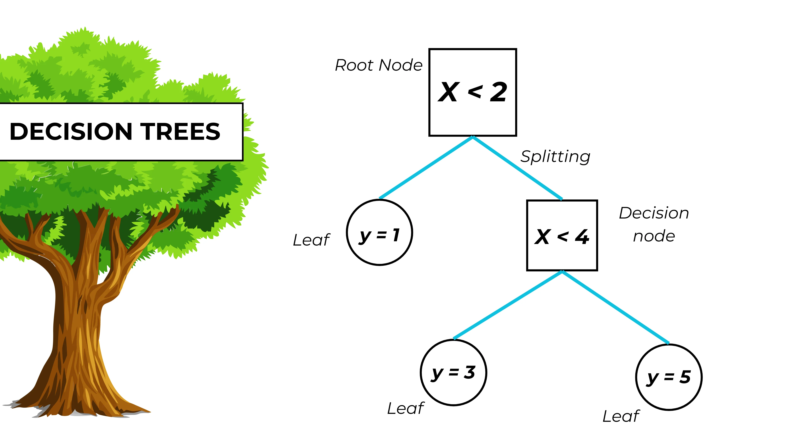
GitHub Repository
View Decision Tree Code on GitHub ↗Dataset Used
We used the cleaned diabetes dataset for all Decision Tree models.
 Download Cleaned Dataset
Download Cleaned Dataset
Data Preprocessing
Steps applied before training the models:
- Loaded cleaned dataset
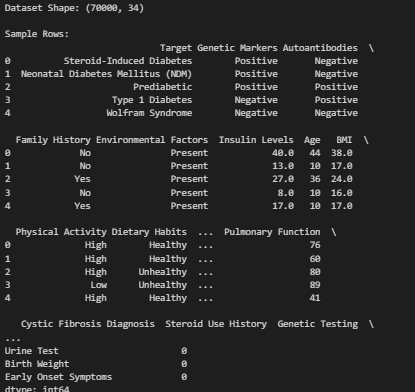
- Encoded categorical features
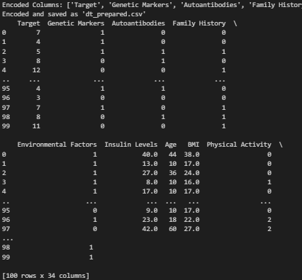
- Separated features and target variables
- Train-test split (80/20)
Training Data Preview
Sample of the training data used to train the model:
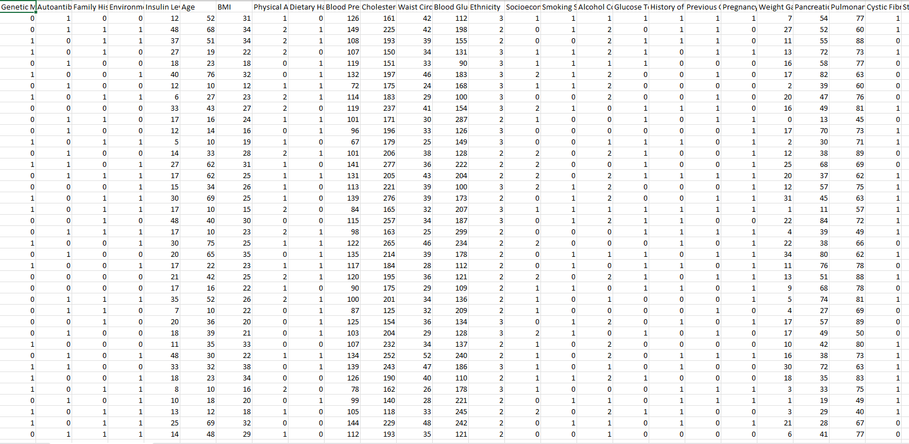
Download Training Sample CSVTesting Data Preview
Sample of the testing data used to evaluate model accuracy:
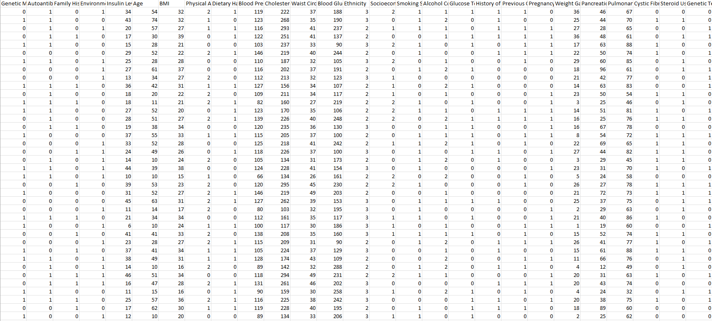
Download Testing Sample CSVDecision Tree Models
Default Decision Tree (Without Tuning)
This model was trained using basic/default parameters.
- No maximum depth or splitting constraints were applied.
- Multiple root features were tested: Blood Glucose, Weight Gain, and Age.
Overall Accuracy: 54.5%
Root: Blood Glucose
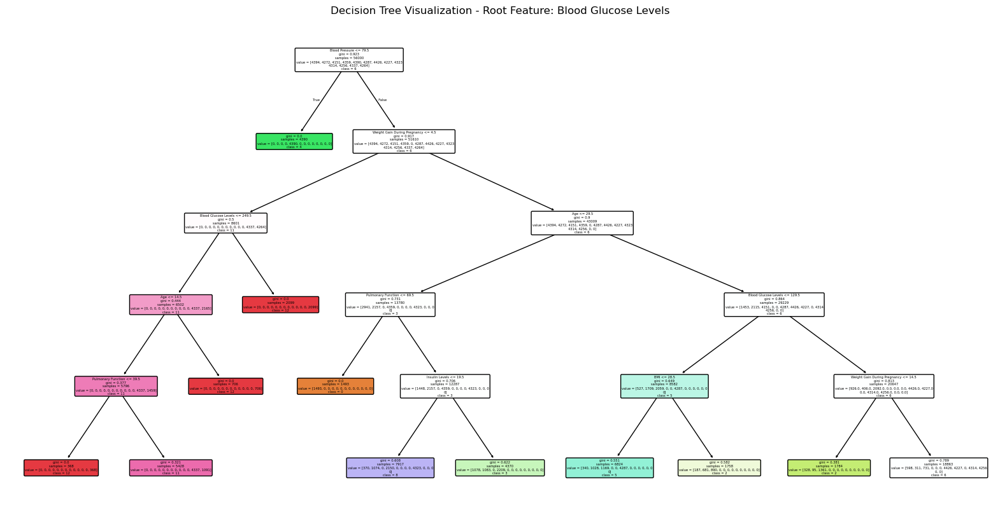
Root: Weight Gain
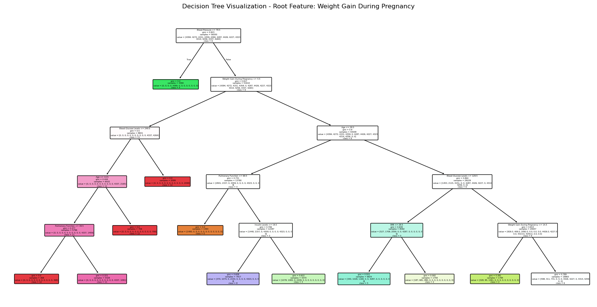
Root: Age
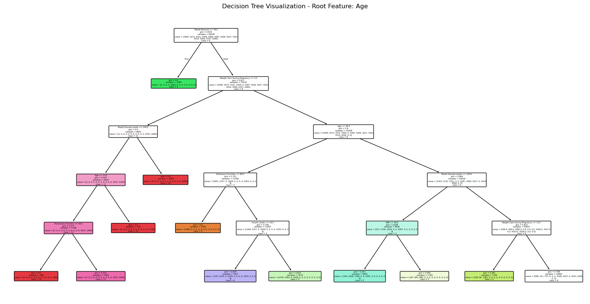
Tuned Decision Tree (GridSearchCV)
Hyperparameter tuning significantly improved the model performance.
- Best Parameters: max_depth=6, min_samples_split=4, criterion='entropy'
- Overall Accuracy: 88.7%
- Roots tried: Genetic Markers, Autoantibodies, Family History
Root: Genetic Markers
Root: Autoantibodies

Root: Family History
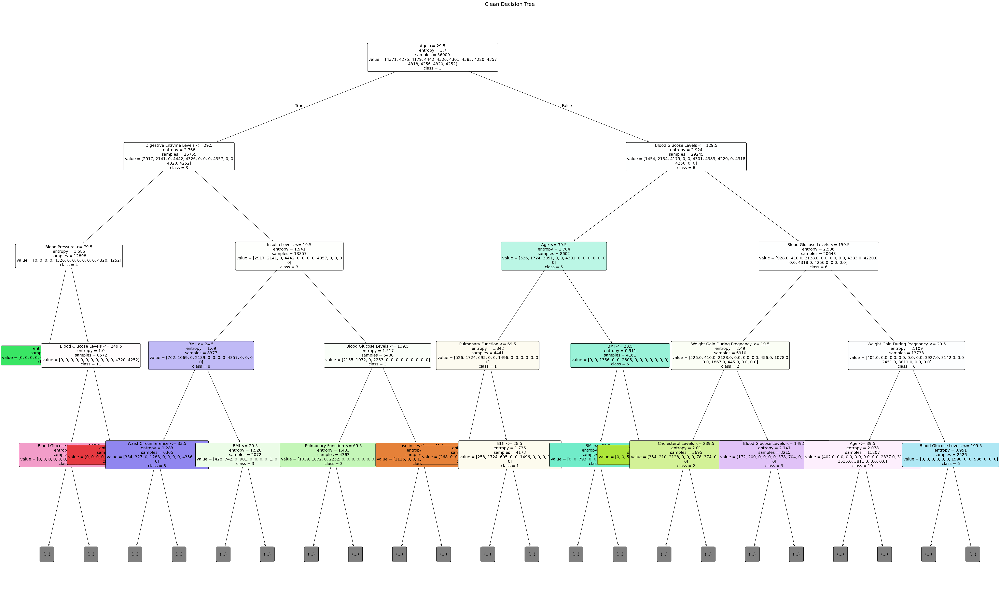
Model Performance Comparison
Performance metrics for both default and tuned models across different roots:
| Model | Accuracy | F1 Macro | F1 Weighted |
|---|---|---|---|
| Default Tree | 54.5% | 0.47 | 0.47 |
| Tuned Tree | 88.7% | 0.89 | 0.89 |
Confusion Matrices
Default Trees
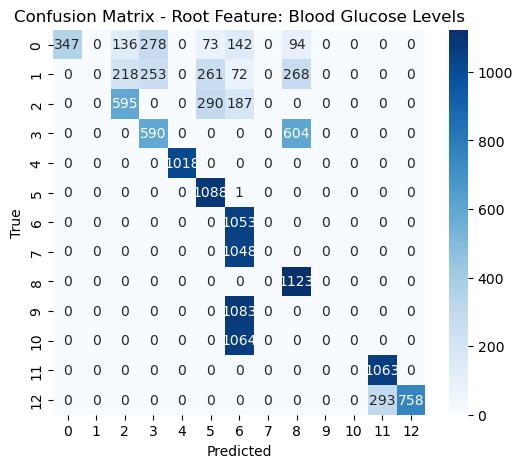
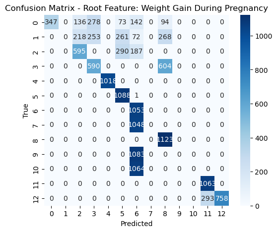
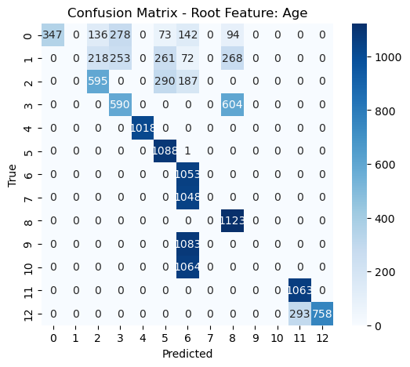
Tuned Trees
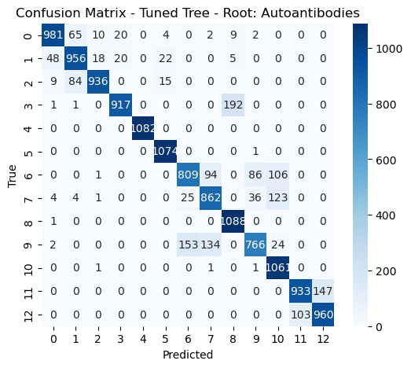
Results and Conclusion
Summary of Decision Tree Performance
We implemented two types of Decision Trees:
- Default Decision Tree: Using root features like Blood Glucose, Weight Gain During Pregnancy, and Age.
- Tuned Decision Tree: Optimized using GridSearchCV, with root features like Genetic Markers, Autoantibodies, and Family History.
Default Trees achieved a moderate performance:
- Accuracy: 54.5%
- F1 Macro: 0.47
- F1 Weighted: 0.47
Despite simplicity, these trees showed clear class separability for some conditions, but struggled on others due to lack of parameter constraints.
Tuned Trees demonstrated significantly better performance:
- Accuracy: 88.7%
- F1 Macro & Weighted: 0.89
Hyperparameter tuning improved generalization, precision, and recall across nearly all classes.
Visual Insights
- Confusion matrices highlight that Tuned Trees better capture class boundaries and minimize misclassifications.
- The Genetic Markers root performed slightly better than other tuned roots like Autoantibodies and Family History.
- Default models tended to misclassify certain classes like Class 1 and Class 9 significantly more.
What We Learned
- Decision Trees are highly interpretable and useful for healthcare-related predictions.
- Root feature selection and hyperparameter tuning play a critical role in model performance.
- Tuned trees are more reliable and robust, especially for high-dimensional medical datasets.
Final Takeaways
Decision Trees offer a powerful balance between interpretability and accuracy when carefully tuned. In our diabetes prediction task, tuning dramatically improved accuracy from 54.5% to 88.7%. This proves that even simple algorithms can produce excellent results with proper preprocessing and optimization.